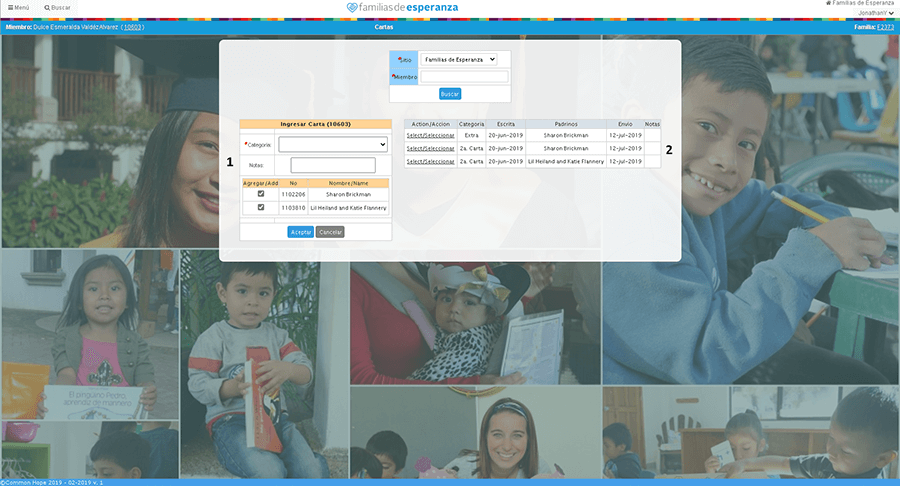

FAMILIAS
MANUAL DE USUARIO
SISTEMAS 2020
- LOGIN
- En caso de cambio de Contraseña
- APADRINAMIENTO
- 1.Monitoreo por Categorias
- 2.Apadrinamintos Incompletos
- 3.Búsqueda de Padrinos
- 4.Cartas por familia
- 5.Cartas de Padrino
- 6.Envió de Cartas
- 7.Fotos
- 8.Perfil Padrino
- 9.Selección de Regalos
- 10.Carnés
- 11.Cartas
- 12.Regalos
- 13.Restricciones de Apadrinamiento
- 14.Resumen de Apadrinamiento
- 15.Visita de Padrinos
Índice
LOGIN
Nos mostrara la siguiente pantalla.
Ingresaremos nuestro usuario y contraseña, si la contraseña es incorrecta nos mostrara el siguiente mensaje.
De lo contrario nos mostrara la página principal.
En caso de cambio de contraseña
Este caso aplica con la nueva normativa de cambiar la contraseña, esta normativa obliga al usuario a cambiar su contraseña cada 6 meses. En este caso cuando ingresa un usuario y contraseña correcta le mostrara el siguiente mensaje.
Seleccionaremos el botón “Cambiar” y nos mostrara una ventana donde podremos cambiar nuestra contraseña con las siguientes normas:
La nueva contraseña debe contener lo siguiente:
1. Debe tener mayúsculas y minúsculas.
2. Debe contener números
3. Debe contener más de 8 caracteres
4. No incluya datos de su nombre o fechas fáciles de piratear
5. La nueva contraseña no se deber repetir con las ultimas 3 contraseñas.
Si la contraseña esta correcta al seleccionar el botón “Aceptar” nos mostrara el siguiente mensaje.
Al presionar el botón aceptar nos regresara al Login donde podremos ingresar con la nueva contraseña.
APADRINAMIENTO
El módulo de apadrinamiento contiene diferentes pantallas que facilitan los servicios que realiza como área.
Monitoreo por Categorias
Esta página contiene estadísticas de los apadrinados en diferentes categorías como por ejemplo cartas, regalos, carnets, etc. Al seleccionarla nos mostrara la siguiente página. Este tiene tres filtros el sitio, la categoría, el tipo donde en algunos casos el tipo dependerá de la categoría en la que busquemos. En algunos casos mostrara el año y de no ser llenado se mostrara la información del año actual
Pasos para realizar una búsqueda
1.llenar filtros y presionar el boton aceptar
Apadrinamientos Incompletos
Esta página se encarga de la búsqueda los perfiles con apadrinamientos incompletos. Al seleccionarlo nos mostrara la siguiente ventana.
Pasos para realizar una búsqueda
1.llenar filtros y presionar el boton aceptar
2.Para realizar una nueva búsqueda presionar el boton "Nueva Búsqueda"
Búsqueda de Padrinos
Esta página se encarga de los perfiles de los padrinos. Al seleccionarlo nos mostrara la siguiente página.
Esta página contiene diferentes filtros como el nombre de los padrinos o aproximaximacion de los nombres, el estado o provincia e incluso el país donde residen como también si hablan español o si se conoce el número de padrino. Al llenar por lo menos uno de los filtros nos mostrara la ventana de resultados.
Aquí nos mostraran los resultados con el o los filtros y cuando seleccionemos el padrino automáticamente nos redijera hacia su perfil.
Cartas por familia
Esta página contiene el ingreso de carta por grupos de familias. Al seleccionarlo nos mostrara la siguiente ventana.

Podremos realizar la búsqueda de la familia por uno de sus miembros apadrinados activos que tienen padrinos o su número de familia.
Al llenar los filtros correctamente nos mostrara una ventana de los apadrinados activos con padrinos. Esta página solo hace ingreso de la primera y segunda carta, este tipo de carta depende de la fecha actual por ejemplo si tenemos una fecha actual entre enero a junio será el ingreso de la primera carta, si en caso es de julio a diciembre será el ingreso de la segunda carta.
Al presionar el botón guardar realizara el registro de las cartas con los apadrinados seleccionados.
Cartas por padrinos
Se encarga del registro de cartas realizadas por un padrino. Antes de ingresar a la página primero deben seleccionar un padrino en la búsqueda de padrinos, en caso contrario no les mostrara la siguiente ventana.
1. Ventana de Registro de Cartas: Con este bloque podremos ingresar cartas dirigidas a los apadrinados solo con seleccionarlos además de agregar una pequeña nota.
2. Historial de Cartas: Este historial muestra todas las cartas escritas por el padrino además podemos modificar o eliminar el registro con el botón “Seleccionar” y en la ventana de registro de cartas nos mostrara dos botones más la opción de eliminar y la opción de modificar.
3. Historial de Apadrinados: Este bloque contiene todos los apadrinados que el padrino apoyo o apoya.
Envió de Cartas
Se encarga del registro de envió de cartas de apadrinados. Al seleccionarlo nos mostrara la siguiente página.
En esta página debemos llenar cada uno de los filtros y presionar el botón “Buscar”. Nos mostrara la siguiente página.

Y buscara las cartas que necesita registrar como enviadas y presiona el botón de “Enviar”.
Fotos
Se encarga de la subida y registro de fotos. Al seleccionarlo nos mostrara la siguiente página.
Para agregar una nueva foto presionaremos el botón de examinar, este nos abrirá una ventana para que podamos buscar la imagen que deseamos ingresar. Y presionamos el botón “Aceptar”.
Al presionarlo la imagen seleccionada se mostrara en la parte izquierda y dándonos una pequeña vista de cómo se visualiza por ultimo para subir la imagen presionamos el botón de subir.
Al hacer esto último nos mostrara la imagen de lado derecho lo que significa que la imagen ya fue subida y podremos darnos cuenta si vamos al resumen de apadrinamiento.
Perfil de Padrino
Se encarga de la búsqueda de los perfiles de los padrinos. Antes de ingresar a la página primero deben seleccionar un padrino en la búsqueda de padrinos, en caso contrario no les mostrara la siguiente ventana.

Esta ventana contiene dos bloques. El primer bloque contiene información sobre el padrino y el segundo bloque contiene todos los registros de los apadrinados que contiene.
Selección de Regalos
Se encarga del registro de selección de regalos de los apadrinados. Al seleccionarlo nos mostrara la siguiente página.
Para que realice la búsqueda debe contener llenos los campos de fecha. Y presionar el botón de Aceptar esto nos redirigirá a la siguiente página.
En esta página presionaremos el botón “Entregado” para los regalos que necesitamos agregarles ese estado.
Carnés
Se encarga del registro de la creación o sustitución de carnets Al seleccionarlo nos mostrara la siguiente página.
1. El primer bloque contiene un ingreso donde deberá ingresar el sitio y el número de miembro.
2. Este bloque contiene el historial de los carnets donde podremos buscar con filtros ya sea el año, mes o sitio
Cartas
Se encarga del registro de cartas. Al seleccionarlo nos mostrara la siguiente página.
1. En el primer bloque podemos realizar el ingreso de las cartas llenando la categoría y seleccionando a los padrinos a los que van dirigidas las cartas.
2. El segundo bloque contiene el historial de todas las cartas realizadas por el apadrinado para sus padrinos.
Para modificar una carta deberemos dirigirnos al segundo bloque y seleccionar el enlace que tiene escrito “Seleccionar”. En el primer bloque cambiara la información a la que contiene el registro seleccionado, lo único que se podrá modificar son las notas de la carta y cuando finalicemos seleccionaremos el botón “Modificar”.
Para eliminar una carta deberemos dirigirnos al segundo bloque y seleccionar el botón que tiene escrito “Seleccionar”. En el primer bloque cambiara la información a la que contiene el registro seleccionado, seleccionaremos el botón “Eliminar”.
Regalos
Se encarga del registro de regalos. Al seleccionarlo nos mostrara la siguiente página.
1. En el primer bloque podemos realizar el ingreso de los regalos llenando la categoría y el tipo.
2. El segundo bloque contiene el historial de todas las cartas realizadas por el apadrinado para sus padrinos. Para modificar una carta deberemos dirigirnos al segundo bloque y seleccionar el botón que tiene escrito “Seleccionar”. En el primer bloque cambiara la información a la que contiene el registro seleccionado, lo único que se podrá modificar son las notas de la carta y cuando finalicemos seleccionaremos el botón “Modificar”.
Para eliminar una carta deberemos dirigirnos al segundo bloque y seleccionar el botón que tiene escrito “Seleccionar”. En el primer bloque cambiara la información a la que contiene el registro seleccionado, seleccionaremos el botón “Eliminar”.
Restricciones de Apadrinamiento
Se encarga del ingreso de restricciones sobre los apadrinados. Al seleccionarlo nos mostrara la siguiente página.
1. En primer bloque se realiza el ingreso de restricción ingresando el número de afiliado, el sitio y la razón para agregar la restricción.
2. El segundo bloque muestra el historial y también tiene filtro por sitio. Además se puede remover la restricción con seleccionar el botón “Seleccionar” que contiene cada registro.
Resumen de Apadrinamiento
Se encarga de mostrar un resumen general de las actividades realizadas por apadrinamiento y otra información. Al seleccionarlo nos mostrara la siguiente página.
1. En esta parte se encuentra la foto del apadrinado.
2. En este bloque se encuentra la información del apadrinado además de un botón que al ser seleccionado pasara al estado de retomar foto.
3. Este bloque está compuesto por avisos relacionados a la familia del apadrinado.
4. El cuarto bloque contiene un pequeño registro de cartas similar a la página de cartas. La diferencia es que este bloque solo permite el ingreso de la carta y no permite modificarla o eliminarla además de solo ver un historial de cartas de 12 meses atrás.
5. El cuarto bloque contiene un pequeño registro de regalos similar a la página de regalos. La diferencia es que este bloque solo permite el ingreso del regalo y no permite modificarla o eliminarla además de solo ver un historial de regalos de 12 meses atrás.
6. Por ultimo contiene un historial de padrinos que puede llevar a su perfil a través de un enlace.
Visita de padrinos
Se encarga del registro de la visita sobre los padrinos. Antes de ingresar a la página primero deben seleccionar un padrino en la búsqueda de padrinos, en caso contrario no les mostrara la siguiente ventana.
1. El primer bloque es ingreso de visitas además debe llenar la fecha de la visita no mayor a 8 días de la fecha actual y seleccionar los apadrinados además de poder agregar pequeñas notas
2. El segundo bloque contiene el historial de visitas que además podemos modificar y eliminar con el botón “Seleccionar”.